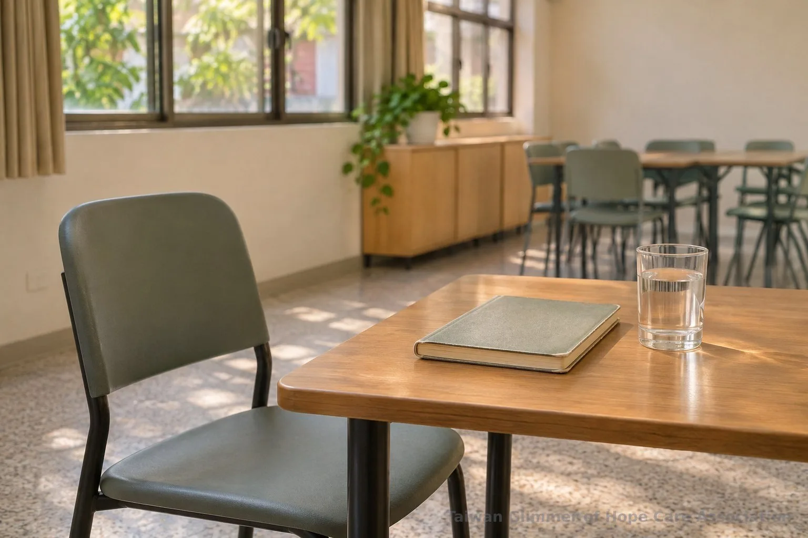
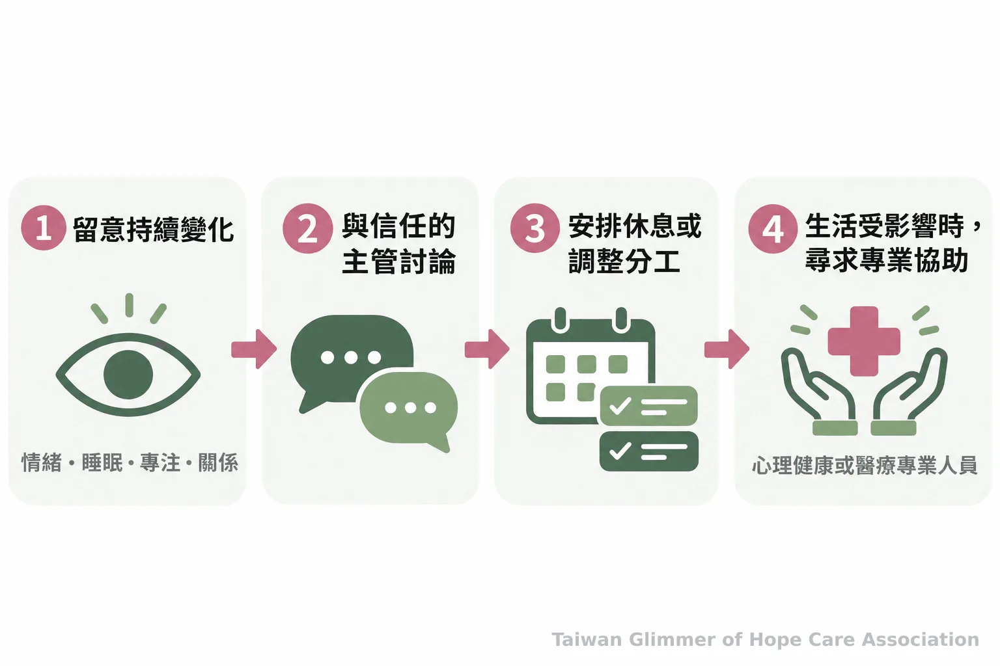
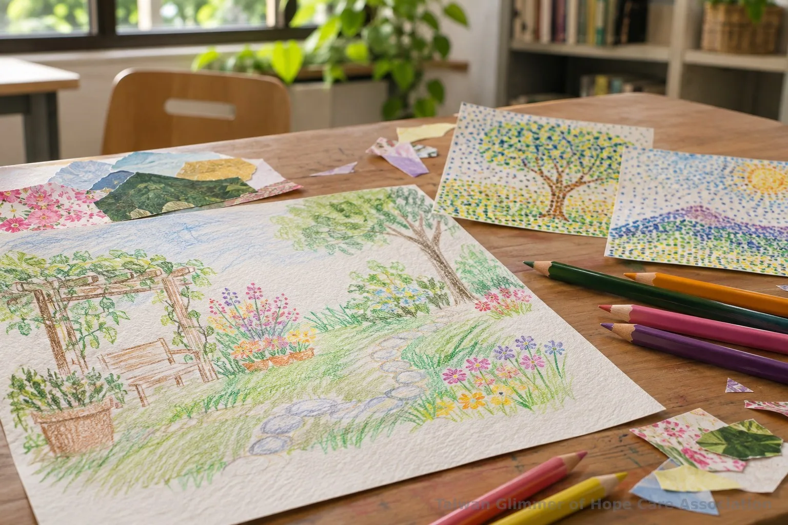

陪伴孩子之前，照顧好同行的大人：志工如何面對替代性創傷
長期聆聽孩子與家庭的困難，可能讓陪伴者感到疲憊、失眠或反覆想起談話。認識替代性創傷的提醒、團隊支持方式，以及微光的藝術陪伴與求助管道。
創傷知情的陪伴｜系列五之 4
陪伴孩子的過程中，大人可能聽見令人掛心的經歷。活動結束後仍反覆想起談話、睡不好，或變得煩躁、麻木，都值得留意。這些反應不能單靠一項症狀判定為替代性創傷；持續時間、強度和生活影響也要一起考量。關於兒少陪伴的安全原則，可延伸閱讀創傷知情的兒少陪伴安全原則。
一、替代性創傷是什麼？哪些變化值得留意？
接觸他人創傷經驗後，若情緒、睡眠、專注或人際互動持續改變，可以把它視為需要關心的訊號。這些反應不等於診斷，也不代表陪伴者不適任。
替代性創傷常指助人者長期接觸創傷經驗後，安全感、信任或對世界的理解受到影響；次級創傷壓力、同理疲勞等詞也常使用，定義彼此有重疊。可先觀察談話後是否難以抽離、休息後是否恢復、下班後是否仍掛念服務對象。記下情境和影響，再找可信任的主管、督導或心理專業人員討論。

二、個人界線與團隊支持可以怎麼安排？
先把工作範圍、交接方式和休息時間說清楚；團隊則可安排固定的督導或同儕討論，讓陪伴者不必獨自承擔。討論時應以工作需要和自己的感受為主，保護孩子與家庭的身分資訊。
活動後，陪伴者可以留一段轉換時間，完成必要交接，再休息或找同伴談談。若某段談話特別難以放下，可以向負責人說明自己的狀態，討論是否需要調整分工；涉及兒少安全的疑慮，則依正式通報管道處理，不由志工自行調查或判斷。持續失眠、焦慮或情緒低落，若已影響日常生活，可尋求心理諮商或醫療專業協助。
Joubert、Hocking 與 Hampson 於 2013 年研究一所癌症專科醫院的 16 名社工，研究指出工作壓力與督導、管理支持值得重視，並提出臨床社工督導模式以降低替代性創傷風險。研究對象是醫院社工，不能直接代表志工；它提醒服務團隊，陪伴者支持也需要納入工作安排。
Joubert、Hocking 與 Hampson 的研究摘要指出：「The study also highlighted the importance of supervision and management support.」研究場域為癌症醫療社工，其他服務團隊仍須考量各自情境。

三、微光的藝術陪伴如何進行？
微光在合作據點每月安排一堂藝術陪伴課，從藝術作品和創作引出情緒主題，不比較畫得好不好。課程活動是陪伴的一種形式，不用畫作診斷孩子，也不取代心理或社福專業。
瑞芳愛鄰據點與愛鄰希望關懷協會合作，是微光起步的第一個兒童繪畫班；板橋明穗據點由明穗教會合作，中壢宣愛則與桃園市宣愛社區關懷協會合作。育妏老師帶領瑞芳與中壢，姚老師帶領板橋。課堂曾以夏卡爾的作品談夢想花園與壓力，也透過「心情的顏色」邀請孩子選色、畫出自己的秘密花園。課堂以創作作為表達與分享的陪伴方式，藝術陪伴不等同藝術治療，也不取代心理或社福專業。
照片與紀錄，請見〈瑞芳愛鄰據點：跟著夏卡爾，飛進我的夢想花園〉。

四、何時尋求專業協助或通報？
陪伴者若持續受情緒或睡眠困擾，可找心理專業人員或醫療院所；遇到兒少疑似受虐、疏忽或其他嚴重傷害，可撥 113 諮詢或通報。若有立即人身安全危險，先撥 110。
衛生福利部保護服務司說明，113 保護專線提供全國民眾 24 小時全年無休服務，可受理兒童少年保護等事件的通報或求助諮詢。通話時可盡量說明相關人事時地物；如有立即危險，衛福部提醒先撥 110。志工的角色是留意安全、依程序求助，不自行查案，也不把保密理解為隱匿危險。
若你正承接陪伴工作，今天可以先做一件小事：留意最近的睡眠與情緒變化，找一位可信任的負責人談談需要的支持。孩子需要被看見，同行的大人也需要有地方放下疲憊。
- 反覆想起談話、睡眠受影響或難以抽離時，先觀察持續程度與生活影響。
- 個人休息、清楚交接與團隊督導，都能成為陪伴工作的一部分。
- 心理困擾可尋求專業協助；兒少疑似受虐可撥 113，立即危險撥 110。
參考資料
- Joubert L, Hocking A, Hampson R. (2013). Social work in oncology-managing vicarious trauma-the positive impact of professional supervision. Social Work in Health Care, 52(2-3), 296–310. https://pubmed.ncbi.nlm.nih.gov/23521390/
- 衛生福利部保護服務司。113 保護專線介紹。https://dep.mohw.gov.tw/DOPs/fp-1183-6499-105.html
常見問題
Q1: 聽完孩子或家庭的困難後感到難過，就是替代性創傷嗎？
不一定。單次難過不能用來判斷；可觀察反應是否持續、加重，或影響睡眠、工作與日常生活。
Q2: 志工可以和同伴討論服務中的感受嗎？
可以把焦點放在自己的狀態、工作界線和需要的支持，同時遵守保密原則，不透露孩子或家庭可識別的資訊。
Q3: 什麼時候適合尋求心理專業協助？
若失眠、焦慮、情緒低落或專注困難持續，或已影響生活，可聯絡心理諮商或醫療院所；若有立即危險，應儘快求助。
Q4: 藝術陪伴能治療孩子的創傷嗎？
不能把藝術陪伴等同藝術治療。創作可以成為表達與分享的活動，但不能以畫作診斷或判定受虐，也不取代專業服務。
Q5: 發現兒少疑似受虐，應該聯絡誰？
可撥衛福部 113 保護專線諮詢或通報；若有立即人身安全危險，先撥 110。
本文同步刊於 appi.news。